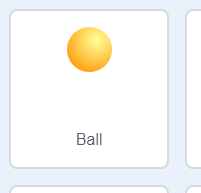
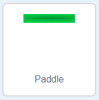
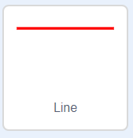
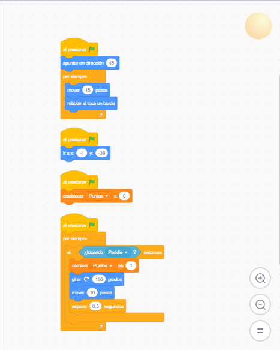
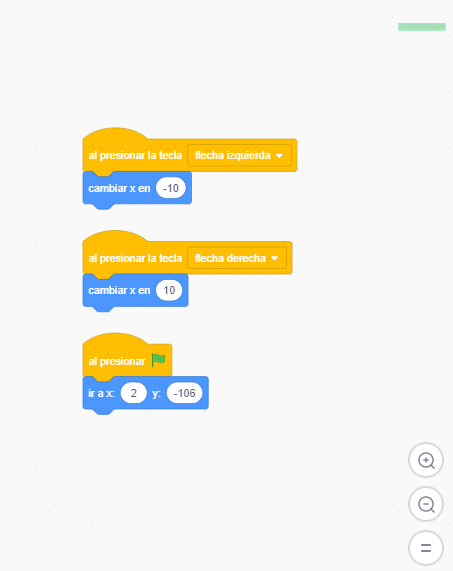
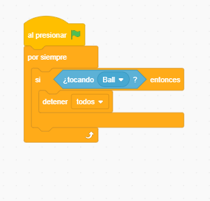

Scrath es un Software que nos permite crear videojuegos sin ningun conocimiento de programacion, permitiendonos crear nuestros propios personajes, fondos, sonidos, entre otras cosas.

Primero seleccionamos el objeto llamado ball
Despues seleccionamos el otro objeto llamado paddle

Y por ultimo escogemos el objeto llamado line

Ahora para que les funcionen tienen que escoger y colocar los bloques asi

Este para ball

Este para paddle

Este para line